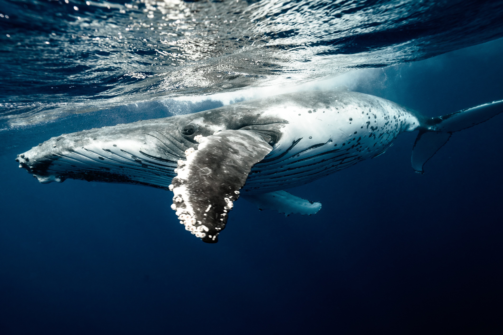
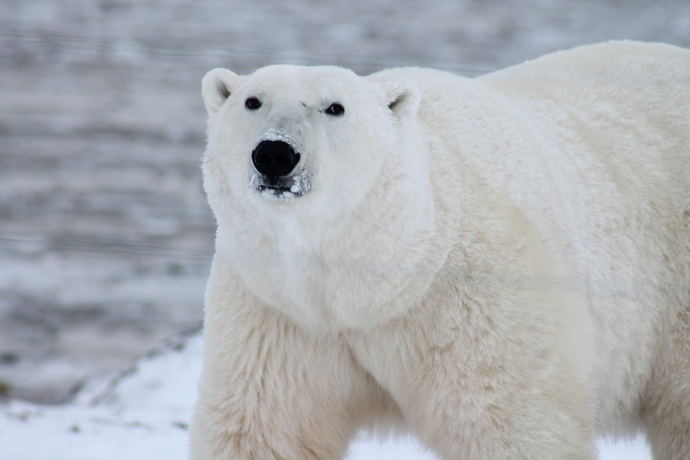

Rhino
Location: Rhino's live in grasslands and floodplains of eastern and southern Africa. Greater one-horned rhinos can be found in the swamps and rain forests of northern India and southern Nepal. Sumatran and Javan rhinos are found only in small areas of Malaysian and Indonesian swamps and rain forests.
Food: Rhinos eat herbivores, which means they eat only vegetation. The type of vegetation they eat varies by species. This is because their snouts are different shapes to accommodate different types of food, according to National Geographic. For example, the black rhino eats trees or bushes because its long lips allow it to pick leaves and fruit from up high. The white rhino has a flat-shaped snout that lets it get closer to the ground for eating grass.
Endanger: Rhinos are endangered because of their horns. People sell the horns and used for medican and jewelry.
Facts:
1. When rhinos are happy, they make a loud "mmwonk" sound with their mouths.
2. Black rhinos are not actually black, according to the International Rhino Foundation. They probably got that name from the dark, muddy soil they like to wallow in or to distinguish them from white rhinos.
3. Though rhinos don't often hang out with each other, they do hang out with birds. The oxpecker will sit on a rhino's back and eat the bugs that crawl on the rhino's skin. That's not the only thing this bird is good for. When danger approaches, the bird will call out, warning the rhino.

Grey Whale
Location: Grey Whales live in North Pcaific Ocean.
Food: Grey whales feed in inshore, shallow waters. Unlike other baleen (filter feeder) whales, grey whales are bottom feeders and use their coarse baleen to strain out small invertebrates (amphipods, ghost shrimp, and crab larvae) from the soft muddy bottom in shallow areas.
Endanger: Whales are endangered because of overfishing, pollution, dam/bridge construction, private/commercial boating and commercial whaling. Whales are hunted because whales have usable products such as meat and blubber, which can be turned into a type of oil which became increasingly important in the Industrial Revolution. ... The industry spread throughout the world, and became increasingly profitable in terms of trade and resources.
Facts:
1. The blue whale is the largest animal that ever lived and can grow to 90 or more feet and weigh as much as 24 elephants
2. Beluga whales have flexible necks, allowing them to move their heads
3. Gray whales make one of the longest annual migrations of any mammal: they travel about 10,000 miles (16,000 km) round trip

Polar Bear
Location: Polar Bears lives in Antarctica.
Food: Polar bears eat ringed seals, but may also eat bearded seals. Polar bears hunt seals by waiting for them to come to the surface of sea ice to breathe. When the seal nears the surface, the polar bear will bite or grab the seal and pull it onto land to feed. They also eat walruses and whale carcasses.
Endanger: Polar bears spend over 50% of their time hunting for food. ... But because of ongoing and potential loss of their sea ice habitat resulting from climate change–the primary threat to polar bears Arctic-wide–polar bears were listed as a threatened species in the US under the Endangered Species Act in May 2008
Facts:
1. Polar bears evolved from brown bears to survive in extreme northern environments
2. Polar bears are the largest terrestrial predator on the planet, with large males standing more than 11 feet (3.3 meters) tall on their hind legs and reaching weights over 1,700 pounds (770 kilograms)
3. Unlike black bears and brown bears, polar bears do not hibernate during the winter months because that’s when sea ice forms, which the polar bears need to hunt seals
